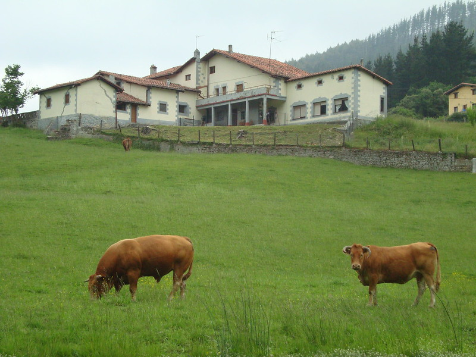
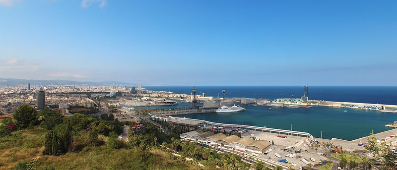
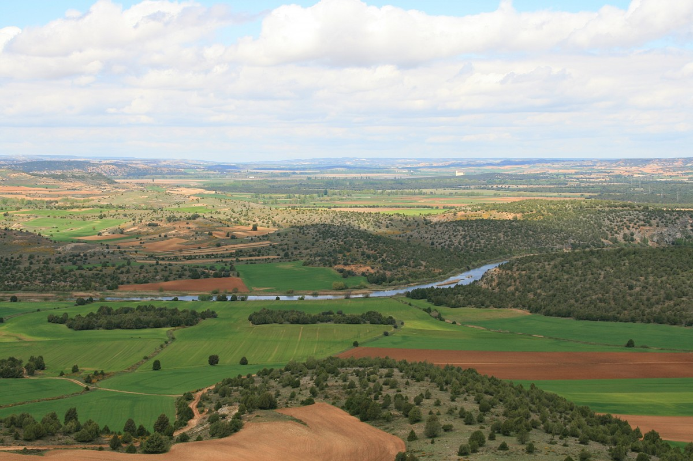
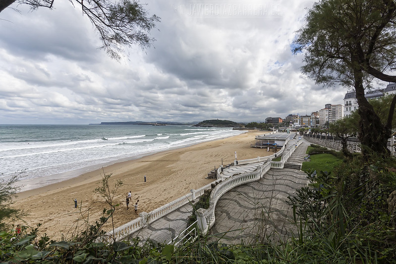

Descifrando paisajes
Vamos a intentar identificar el paisaje desde dos puntos de vista distintos.
- A partir de la mirada artística de un escritor.
- Con el análisis científico de una serie de fotografías.
Ahora nos adentramos en dos actividades: leer y comentar un paisaje escrito (actividad 1) y analizar un paisaje en imágenes (actividad 2).
Actividad 1. Un paisaje escrito
Vamos a trabajar un fragmento de “Castilla” de José Martínez Ruiz (Azorín) en el que el autor nos describe un paisaje castellano. Leeremos el texto individualmente e intentaremos contestar a las preguntas que se plantean en nuestro cuaderno. Después trabajaremos en grupo para comprobar nuestras respuestas y mejorar el resultado final.
Estas son las preguntas que tendremos que responder:
- ¿Qué colores se reflejan en este paisaje?, ¿A qué elementos se refieren (vegetación, agua, elementos arquitectónicos...)?
- ¿Se describe alguna vegetación?, ¿Cuál es la que domina?
- ¿En qué medida aparece el ser humano en este paisaje (terrenos de labor, viviendas...)?
- ¿Qué fenómenos atmosféricos se aprecian?
- ¿Qué elementos de agua aparecen reflejados?
- ¿Cuáles se refieren al relieve geológico?
- ¿Se describe algún proceso de formación de este paisaje?
- ¿Seríamos capaces de hacer un dibujo del paisaje descrito?
Actividad 2. Un paisaje en imágenes
Trabajaremos en grupos de cuatro personas, utilizando la técnica del puzzle. Cada uno de los miembros del grupo analizará una de las imágenes. Después se reunirá, en equipos de expertos, con los compañeros de otros grupos que hayan trabajado sobre la misma imagen. Por último, volveremos a los grupos originales para poner en común y completar los resultados originales.
Proceso
En primer lugar tendremos que analizar sus características externas o Fenosistema, siguiendo las indicaciones de esta plantilla para analizar un paisaje.
A continuación trataremos de hacer una primera aproximación de cómo se ha formado ese paisaje. Respondemos a las siguientes preguntas que describen lo que llamamos el Criptosistema.
- ¿Somos capaces de imaginar cómo es el clima que influye en ese paisaje?
- ¿Cómo se ha podido llegar a formar?, ¿Qué factores han influido más: el viento, agua, temperatura, seres vivos, acción humana...?
- ¿Podemos inferir, aunque no se vea, alguna acción del agua o viento: valles de ríos, cauces secos...?
- ¿Observamos indirectamente el resultado de algún tipo de transporte o sedimentación de materiales: aluviones de ríos, cárcavas, playas...?
- ¿Podemos comentar algo sobre los procesos geológicos que han dado como resultado este paisaje?, ¿Cuál ha sido su evolución?
- ¿Podemos inferir alguna influencia de la acción humana que haya modificado sustancialmente el paisaje?, ¿Algún impacto o contaminante?
Imágenes para comentar:
- Balmaseda (Bizkaia)
-

Pilar Etxebarria. Balmaseda Bizkaia (CC BY) - Port Vell (Barcelona)
-

Albert Torrelló. Panorámica de Port Vell (CC BY-SA) - Gomaz (Soria)
-

Miguel Ángel García. Gormaz en Soria (CC BY) - Playa del Sardinero- Santander (Cantabria)
-

Javier Díaz Becerra. Playa del Sardinero (CC BY-NC-SA)
Recordamos
Para analizar un paisaje hay que tener en cuenta dos perspectivas:
- El fenosistema: características externas que pueden observarse y delimitarse directamente. Nos proporcionan información sobre la calidad de un paisaje.
- El criptosistema: componentes que no se observan a simple vista pero son los que han producido ese paisaje, los que nos permiten interpretarlo. Estos son los que iremos conociendo a través de nuestra aventura.